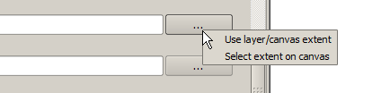
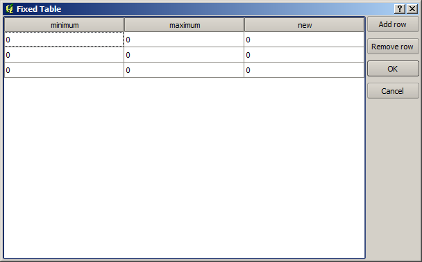

The SEXTANTE toolbox¶
Introduction¶
The Toolbox is the main element of the SEXTANTE GUI, and the one that you are more likely to use in your daily work. It shows the list of all available algorithms grouped in different blocks, and is the access point to run them whether as a single process or as a batch process involving several executions of a same algorithm on different sets of inputs.

The toolbox contains all the algorithms available, divided into groups. Each group represents a so-called algorithm provider, which is a set of algorithms coming from the same source, for instance, from a third-party application with geoprocessing capabilities. Some of this groups represent algorithms from one of such third-party applications (like SAGA, GRASS or R), while other contain algorithms directly coded along with SEXTANTE elements, not relying on any additional software. Currently, these providers all reuse code from already-existing QGIS plugins (more specifically, from the fTools vector library shiped along with QGIS and the contributed mmqgis plugin that you can install using the plugin manager), making them more useful, since they can be executed from elements such as the modeler or the batch processing interface, which we will soon describe.
Additionally, two more providers can be found, namely Models and Scripts. This providers include user-created algorithms, and allow you to define your own workflows and processing tasks. We will devote a full section to them a bit later.
In the upper part of the toolbox you can find a text box. To reduce the number of algorithms shown in the toolbox and make it easier to find the one you need, you can enter any word or phrase on the text box. Notice that, as you type, the number of algorithms in the toolbox is reduced to just those which contain the text you have entered in their names.
To execute an algorithm, just double-click on its name in the toolbox.
The algorithm dialog¶
Once you double-click on the name of the algorithm that you want to execute, a dialog similar to the next one is shown (in this case, the dialog corresponds to the SAGA-Convergence index algorithm).

This dialog is used to set the input values that the algorithm needs to be executed. It shows a table where input values and configuration parameters are to be set. It, of course, has a different content depending on the requirements of the algorithm to be executed, and is created automatically based on those requirements. On the left side, the name of the parameter is shown. On the right side the value of the parameter can be set.
Although the number and type of parameters depend on the characteristics of the algorithm, the structure is similar for all of them. The parameters found on the table can be of one of the following types.
- A raster layer, to select from a list of all the ones available (currently opened) in QGIS. The selector contains as well a button on its right-hand side, to let you select filenames that represent layers currently not loaded in QGIS.
- A vector layer, to select from a list of all the ones available in the QGIS. Layers not loaded in QGIS can be selected as well, as in the case of raster layers, but only if the algorithm does not require a table field selected from the attributes table of the layer. In that case, only opened layers can be selected, since they need to be open so as to retrieve the list of field names available.
You will see a button by each vector layer selector. If the algorithm contains several of them, you will be able to toggle just one of them. If the button corresponding to a vector input is toggled, the algorithm will be executed iteratively on each one of its features. We will see more about this kind of execution at the end of this section.
A table, to select from a list of all the ones available in QGIS. Non-spatial tables are loaded into QGIS like vector layers, and in fact they are treated as such by the program. Currently, the list of available tables that you will see when executing a SEXTANTE algorithm that needs one of them is restricted to tables coming from files in DBase (.dbf) or Comma-Separated Values (.csv) formats
An option, to choose from a selection list of possible options.
A numerical value, to be introduced in a text box. You will find a button by its side. Clicking on it you will see a dialog that allows you to enter a mathematical expression, so you can use it as a handy calculator. Some useful variables related to data loaded into QGIS can be added to your expression, so you can select a value derived from any of this variables such as the cellsize of a layer or the northern most coordinate of another one.

A range, with min and max values to be introduced in two text boxes.
A text string, to be introduced in a text box.
A field, to choose from the attributes table of a vector layer or a single table selected in another parameter.
A Coordinate Reference System. You can type the EPSG code directly in the text box, or select it from the CRS selection dialog that appear when you click on the button on the right-hand size
A extent, to be entered by four number representing its xmin, max, ymin, ymax limits. Clicking on the button on the right-hand side of the value selector, a pop-up menu will appear, giving you two option: to select the value from a layer or the current canvas extent, or to define it by dragging directly onto the map canvas.

If you select the first option, you will see a window like the next one.

If you select the second one, the parameters window will hide itself, so you can click and drag onto the canvas. Once you have defined the selected rectangle, the dialog will reappear, containing the values in the extent text box.

A list of elements (whether raster layers, vector ones or tables), to select from the list of the ones available in QGIS. To make the selection, click on the small button on the left side of the corresponding row to see a dialog like the following one.

A small table to be edited by the user. These are used to define parameters like lookup tables or convolution kernels, among others.
Click on the button on the right side to see the table and edit its values.
Depending on the algorithm, the number of rows can be modified or not, using the buttons on the right side of the window.
You will find a help button in the lower part of the parameters dialog. If a help file is available, it will be shown, giving you more information about the algorithms and detailed descriptions of what each parameter does. Unfortunately, most algorithms lack good documentation, but if you feel like contributing to the project, this would be a good place to start...
A note on projections¶
SEXTANTE -and also most of the external applications whose algorithms are available from SEXTANTE- does not perform any reprojection on input layers and assumes that all of them are already in a common coordinate system and ready to be analized. Whenever you use more than one layer as input to an algorithm, whether vector or raster, it is up to you to make sure that they are all in the same coordinate system.
Note that, due to QGIS’s on-the-fly reprojecting capabilities, although two layers might seem to overlap and match, that might not be true if their original coordinates are used without reprojecting them onto a common coordinate system. That reprojection should be done manually and then use the resulting files as input to SEXTANTE. Also note that the reprojection process can be performed with SEXTANTE, which incorporates tools to do so.
Data objects generated by SEXTANTE algorithms¶
Data objects generated by SEXTANTE can be of any of the following types:
- A raster layer
- A vector layer
- A table
- An HTML file (used for text and graphical outputs)
They are all saved to disk (there are no in-memory results), and the parameters table will contain a text box corresponding to each one of these outputs, where you can type the output channel to use for saving it. An output channel contains the information needed to save the resulting object somewhere. In the most usual case, you will save it to a file, but the architecture of SEXTANTE allows for any other way of storing it. For instance, a vector layer can be stored in a database or even uploaded to a remote server using a WFS-T service. Although solutions like these are not yet implemented, SEXTANTE is prepared to handle them, and we expect to add new kinds of output channels in a near feature.
To select an output channel, just click on the button on the right side of the text box. That will open a save-file dialog, where you can select the desired filepath. Supported file extensions are shown in the file format selector of the dialog, depending on the kind of output and the algorithm.
The format of the output is defined by the filename extension. The supported formats depend on the ones supported by the algorithm itself. To select a format, just select the corresponding file extension (or add it if you are directly typing the filepath instead). If the extension of the filepath you entered does not match any of the supported ones, a default extension (usually dbf for tables, tif for raster layers and shp for vector ones) will be appended to the filepath and the file format corresponding to that extension will be used to save the layer or table.
If you do not enter any filename, the result will be saved as a temporary file and in the corresponding default file format, and will be deleted once you exit QGIS (take care with that in case you save your project and it contains temporary layers)
You can set a default folder for output data objects. Go to the configuration dialog (you can open it from the SEXTANTE menu), and in the General group you will find a parameter named Output folder. This output folder is used as the default path in case you type just a filename with no path (i.e. myfile.shp) when executing an algorithm.
Apart from raster layers and tables, SEXTANTE also generates graphics and texts as HTML files. These results are shown at the end of the algorithm execution in a new dialog. This dialog will keep the results produced by SEXTANTE during the current session, and can be shown at any time by selecting the SEXTANTE results viewer menu
Some external applications might have files (with no particular extension restrictions) as output, but they do not belong to any of the categories above. Those outut files will not be processed by QGIS (opened or included into the current QGIS project), since most of the times correspond to file formats or elements not supported by QGIS. This is, for instance, the case with LAS files used for LiDAR data. The files get created, but you won’t see anything new in your QGIS working session.
For all the other types of outputs, you will find a check box that you can use to tell SEXTANTE not whether to load the file once it is generated by the algorithm or not. By default, all files are opened.
SEXTANTE does not support optional outputs, so all outputs are created, but you can uncheck the corresponding check box if you are not interested in a given output, which virtually makes it behave like an optional output (although the layer is created anyway, but if you leave the text box empty, it will be saved to a temporary file and deleted once you exit QGIS)
Configuring SEXTANTE¶
As it has been mentioned, the configuration menu gives access to a new dialog where you can configure how SEXTANTE works. Configuration parameters are structured in separate blocks that you can select on the left-hand side of the dialog.
Along with the aforementioned Output folder entry, the General block contains parameters for setting the default rendering style for SEXTANTE layers (that is, layers generated by using algorithms from any of the SEXTANTE components). Just create the style you want using QGIS, save it to a file, and then enter the path to that file in the settings so SEXTANTE can use it. Whenever a layer is loaded by SEXTANTE and added to the QGIS canvas, it will be rendered with that style.
Rendering stlyes can be configured individually for each algorithm and each one of its outputs. Just right-click on the name of the algorithm in the toolbox and select Edit rendering styles. You will see a dialog like the one shown next.
Select the style file (*.qml) that you want for each output and press OK.
Apart from the General block in the settings dialog, you will also find one for each algorithm provider. They contain an Activate item that you can use to make algorithms appear or not in the toolbox. Also, some algorithm providers have their own configuration items, that we will explain later when covering particular algorithm providers.